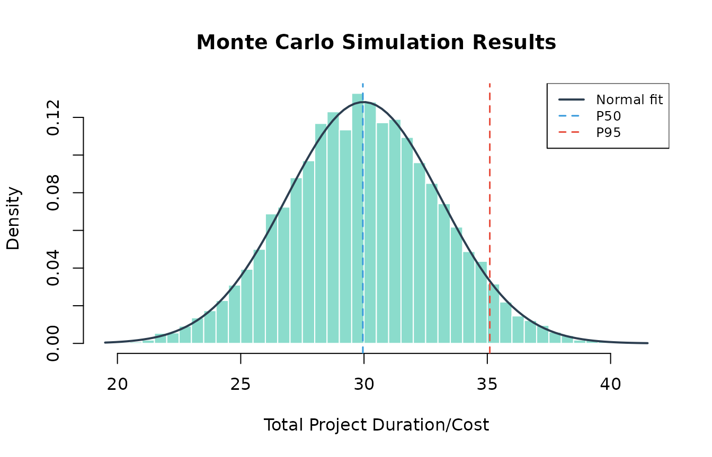
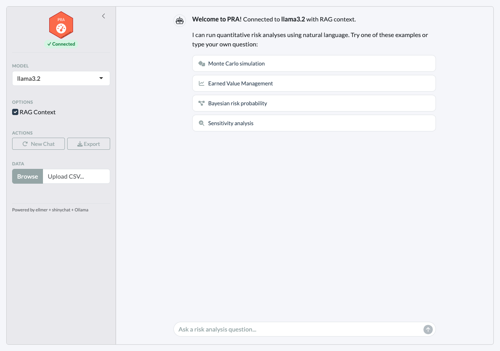
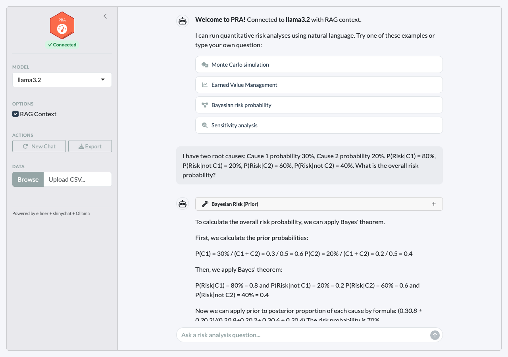

Overview
PRA includes an AI agent framework with three routing modes for user input:
| Input type | Route | Example |
|---|---|---|
/command |
Deterministic — executes the tool directly, no LLM | /mcs tasks=[...] |
| Numerical data for computation | LLM tool call — the model selects and calls the right tool | “Simulate 3 tasks: Normal(10,2)…” |
| Conceptual / explanatory question | RAG — answered from the knowledge base, no tool call | “What is earned value?” |
Three interfaces are available:
-
Slash commands (
/mcs,/evm,/risk, …) - deterministic tool calls that bypass the LLM for instant, reliable results -
Chat interface (
pra_chat()) - programmatic R chat object powered by ellmer where the LLM selects tools or answers from RAG -
Shiny app (
pra_app()) - browser-based experience combining all three modes, powered by shinychat
Prerequisites
Install Ollama
Download from https://ollama.com, then pull a model:
Install R dependencies
install.packages(c("ellmer", "ragnar", "shiny", "bslib", "shinychat", "jsonlite"))Slash Commands
Slash commands provide deterministic tool execution, no LLM required.
Type /help to see all available commands, or
/help <command> for detailed usage with argument
descriptions and examples.
Available commands
library(PRA)
cat(PRA:::format_help_overview())Getting help for a command
Each command includes argument specifications, defaults, and examples:
cat(PRA:::format_command_help("mcs", PRA:::pra_command_registry()$mcs))Example: Monte Carlo simulation
Run a simulation for a 3-task project directly:
set.seed(42)
r <- PRA:::execute_command(
'/mcs n=10000 tasks=[{"type":"normal","mean":10,"sd":2},{"type":"triangular","a":5,"b":10,"c":15},{"type":"uniform","min":8,"max":12}]'
)
cat(r$result)
#> Monte Carlo Simulation Results (n = 10,000):
#>
#> Summary Statistics:
#> Mean 29.9804
#> SD 3.113
#> Min 19.502
#> Max 41.3892
#>
#> Percentiles:
#> P5 24.8726
#> P10 26.0194
#> P25 27.8881
#> P50 29.9536
#> P75 32.0796
#> P90 33.9873
#> P95 35.1014
# The /mcs command stores results for chaining — visualize them:
result <- PRA:::.pra_agent_env$last_mcs
hist(result$total_distribution,
freq = FALSE, breaks = 50,
main = "Monte Carlo Simulation Results",
xlab = "Total Project Duration/Cost",
col = "#18bc9c80", border = "white"
)
curve(dnorm(x, mean = result$total_mean, sd = result$total_sd),
add = TRUE, col = "#2c3e50", lwd = 2
)
abline(
v = quantile(result$total_distribution, c(0.50, 0.95)),
col = c("#3498db", "#e74c3c"), lty = 2, lwd = 1.5
)
legend("topright",
legend = c("Normal fit", "P50", "P95"),
col = c("#2c3e50", "#3498db", "#e74c3c"),
lty = c(1, 2, 2), lwd = c(2, 1.5, 1.5),
cex = 0.8, bg = "white"
)
Example: Chaining MCS to contingency
After running /mcs, chain to /contingency
for the reserve estimate:
r <- PRA:::execute_command("/contingency phigh=0.95 pbase=0.50")
cat(r$result)
#> Contingency Analysis:
#>
#> Base Percentile P50
#> High Percentile P95
#> Contingency Reserve 5.1478Example: Sensitivity analysis
Identify which tasks drive the most variance:
r <- PRA:::execute_command(
'/sensitivity tasks=[{"type":"normal","mean":10,"sd":2},{"type":"triangular","a":5,"b":10,"c":15},{"type":"uniform","min":8,"max":12}]'
)
cat(r$result)
#> Sensitivity Analysis (variance contribution per task):
#>
#> Task 1 1
#> Task 2 1
#> Task 3 1Example: Earned Value Management
Full EVM analysis with a single command:
r <- PRA:::execute_command(
"/evm bac=500000 schedule=[0.2,0.4,0.6,0.8,1.0] period=3 complete=0.35 costs=[90000,195000,310000]"
)
cat(r$result)
#> Earned Value Management Analysis:
#>
#> Core Metrics:
#> Planned Value (PV) 300,000
#> Earned Value (EV) 175,000
#> Actual Cost (AC) 310,000
#>
#> Variances:
#> Schedule Variance (SV) -125,000
#> Cost Variance (CV) -135,000
#>
#> Performance Indices:
#> Schedule Performance Index (SPI) 0.5833
#> Cost Performance Index (CPI) 0.5645
#>
#> Forecasts:
#> EAC (Typical) 885,714.3
#> EAC (Atypical) 635,000
#> EAC (Combined) 1,296,939
#> Estimate to Complete (ETC) 575,714.3
#> Variance at Completion (VAC) -385,714.3
#> TCPI (to meet BAC) 1.7105Example: Bayesian risk probability
Calculate prior risk from two root causes:
r <- PRA:::execute_command(
"/risk causes=[0.3,0.2] given=[0.8,0.6] not_given=[0.2,0.4]"
)
cat(r$result)
#> Bayesian Risk Analysis (Prior):
#>
#> Risk Probability 0.82
#> Risk Percentage 82%
#> Number of Causes 2Then update with observations — Cause 1 occurred, Cause 2 unknown:
r <- PRA:::execute_command(
"/risk_post causes=[0.3,0.2] given=[0.8,0.6] not_given=[0.2,0.4] observed=[1,null]"
)
cat(r$result)
#> Bayesian Risk Analysis (Posterior):
#>
#> Posterior Risk Probability 0.6316
#> Posterior Risk Percentage 63.16%
#>
#> Observations:
#> Cause 1: Occurred
#> Cause 2: UnknownExample: Second Moment Method
Quick analytical estimate without simulation:
r <- PRA:::execute_command("/smm means=[10,12,8] vars=[4,9,2]")
cat(r$result)
#> Second Moment Method Results:
#>
#> Total Mean 30
#> Total Variance 15
#> Total Std Dev 3.873Input validation and guidance
Missing or invalid arguments produce helpful error messages:
# Missing required arguments
r <- PRA:::execute_command("/risk causes=[0.3]")
cat(r$result)
#> **Missing required argument(s):** given, not_given
#>
#> ### /risk — Bayesian Risk (Prior)
#>
#> Calculate prior risk probability from root causes using Bayes' theorem.
#>
#> **Arguments:**
#> - **causes** *(required)* — JSON array of cause probabilities, e.g. [0.3, 0.2]
#> - **given** *(required)* — JSON array of P(Risk | Cause), e.g. [0.8, 0.6]
#> - **not_given** *(required)* — JSON array of P(Risk | not Cause), e.g. [0.2, 0.4]
#>
#> **Examples:**
#> /risk causes=[0.3,0.2] given=[0.8,0.6] not_given=[0.2,0.4]
# Unknown command
r <- PRA:::execute_command("/simulate")
cat(r$result)
#> Unknown command: **/simulate**
#>
#> Did you mean one of these?
#> - /mcs
#> - /smm
#> - /contingency
#> - /sensitivity
#> - /evm
#> - /risk
#> - /risk_post
#> - /learning
#> - /dsm
#>
#> Type `/help` for a list of all commands.Chat Interface
The chat interface routes queries through the LLM, which decides whether to call a tool or answer from RAG context:
- Numerical data (distributions, costs, schedules) → LLM calls the appropriate tool and interprets the results
- Conceptual questions (“what is CPI?”, “how does MCS work?”) → LLM answers from RAG knowledge base with source citations
- Ambiguous → LLM uses RAG context and only calls a tool if data is present
library(PRA)
chat <- pra_chat(model = "llama3.2")
# Tool call: user provides numerical data
chat$chat("Run a Monte Carlo simulation for a 3-task project with
Task A ~ Normal(10, 2), Task B ~ Triangular(5, 10, 15),
Task C ~ Uniform(8, 12). Use 10,000 simulations.")
# RAG: conceptual question, no computation needed
chat$chat("What is the difference between SPI and CPI?")For guaranteed reliability with computations, use
/commands instead. The chat interface is best suited for
exploratory questions and interpretation.
Using cloud models
For better accuracy with complex queries, supply a pre-configured ellmer chat object:
# OpenAI
chat <- pra_chat(chat = ellmer::chat_openai(model = "gpt-4o"))
# Anthropic
chat <- pra_chat(chat = ellmer::chat_anthropic(model = "claude-sonnet-4-20250514"))Notes on chat reliability
- Conceptual questions work well even with small models since they only require reading RAG context, not tool calling.
-
Tool calling quality depends on model size.
llama3.2(3B) handles simple single-tool queries; larger models (8B+) are more reliable for multi-step chains. - If the model attempts to call a tool for a conceptual question, or
describes what it would do instead of calling tools, use
/commandsfor deterministic results.
Interactive Shiny App
For a browser-based experience with streaming responses and inline visualizations:
pra_app()The app supports all three input modes in the same chat panel:
- Type
/mcs tasks=[...]for instant deterministic results - Type “Simulate 3 tasks…” for LLM tool calling
- Type “What is earned value?” for RAG-powered answers

Clicking an example prompt executes the /command
instantly and displays rich results with tables and plots:

Features
-
Three input modes —
/commands(deterministic), natural language (LLM tool calls), and conceptual questions (RAG) -
Clickable example prompts that execute
/commandson click - Streaming chat powered by shinychat with token-by-token responses
- Inline tool results displayed as rich HTML tables and plots
- RAG source citations — the agent cites knowledge base files for conceptual answers
- Connection status badge showing model connectivity
- Collapsible sidebar with model selection, RAG toggle, and CSV upload
- Export — download the conversation as a markdown file
RAG Knowledge Base
The agent is enhanced with domain knowledge through retrieval-augmented generation (RAG). When RAG context is retrieved, the agent cites the source files in its response.
Built-in knowledge files
| File | Topics |
|---|---|
mcs_methods.md |
Distribution selection, correlation, interpreting percentiles |
evm_standards.md |
EVM metrics, performance indices, forecasting methods |
bayesian_risk.md |
Prior/posterior risk, Bayes’ theorem for root cause analysis |
learning_curves.md |
Sigmoidal models (logistic, Gompertz, Pearl), curve fitting |
sensitivity_contingency.md |
Variance decomposition, contingency reserves |
pra_functions.md |
PRA package function reference |
How RAG context flows
- User asks a question
- The question is embedded and matched against the knowledge base using hybrid search (vector similarity + BM25)
- The top 3 matching chunks are prepended to the query with
[Source: filename]tags - The agent is instructed to cite these sources in its response
- The agent uses the context to inform its answer while still calling tools for computation
Adding your own documents
store <- build_knowledge_base()
# Add a single file
add_documents(store, "path/to/my_risk_register.md")
# Add all .md and .txt files in a directory
add_documents(store, "path/to/project_docs/")Available Commands and Tools
Slash commands (deterministic)
| Command | Description |
|---|---|
/mcs |
Monte Carlo simulation with task distributions |
/smm |
Second Moment Method (analytical estimate) |
/contingency |
Contingency reserve from last MCS |
/sensitivity |
Variance contribution per task |
/evm |
Full Earned Value Management analysis |
/risk |
Bayesian prior risk probability |
/risk_post |
Bayesian posterior risk after observations |
/learning |
Sigmoidal learning curve fit and prediction |
/dsm |
Design Structure Matrix |
/help |
List all commands or get help for one |
LLM tools (via chat)
| Module | Tool | Use case |
|---|---|---|
| Simulation | mcs_tool |
Full Monte Carlo with distributions |
| Analytical | smm_tool |
Quick mean/variance estimate |
| Post-MCS | contingency_tool |
Reserve at confidence level |
| Post-MCS | sensitivity_tool |
Variance contribution per task |
| EVM | evm_analysis_tool |
All 12 EVM metrics in one call |
| Bayesian | risk_prob_tool |
Prior risk from root causes |
| Bayesian | risk_post_prob_tool |
Posterior risk after observations |
| Bayesian | cost_pdf_tool |
Prior cost distribution |
| Bayesian | cost_post_pdf_tool |
Posterior cost distribution |
| Learning | fit_and_predict_sigmoidal_tool |
Pearl/Gompertz/Logistic |
| DSM | parent_dsm_tool |
Resource-task dependencies |
| DSM | grandparent_dsm_tool |
Risk-resource-task dependencies |
Evaluation with vitals
PRA includes an evaluation framework for measuring LLM tool-calling
accuracy using the vitals
package. The evaluation suite in inst/eval/pra_eval.R tests
15 scenarios across three tiers:
| Tier | Description | Example |
|---|---|---|
| Single-tool | One tool call | “Simulate 3 tasks with distributions…” |
| Multi-tool chain | Sequential tool calls | “Run MCS then calculate contingency at 95%” |
| Open-ended | Requires interpretation | “My project is behind schedule, here’s EVM data…” |
# Run evaluation
source(system.file("eval/pra_eval.R", package = "PRA"))
results <- run_pra_eval(model = "llama3.2")
# Compare models
comparison <- run_pra_comparison(
models = c("llama3.2", "qwen2.5"),
rag_options = c(TRUE, FALSE)
)Troubleshooting
Tool calling not working
Small models sometimes describe what they would do rather than
actually calling tools. Use /commands for reliable
deterministic execution:
# Instead of asking the LLM:
chat$chat("Run a Monte Carlo simulation...")
# Use the /command directly in the app:
# /mcs tasks=[{"type":"normal","mean":10,"sd":2}]Other workarounds for LLM chat:
- Use
llama3.1(8B) or larger for better tool calling than 3B models - Be explicit: “Call the mcs_tool with these parameters…”
- Use a cloud model:
pra_chat(chat = ellmer::chat_openai(model = "gpt-4o"))